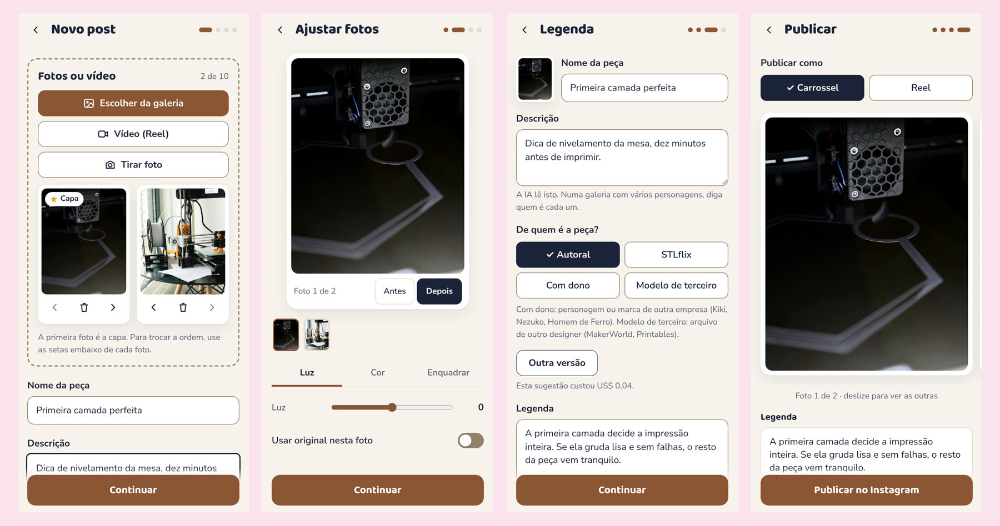

BrPubli
Publica no Instagram as fotos de peças impressas em 3D, com legenda escrita por IA e revisada por mim.
- O problema
- Imprimir e pintar é o hobby. Tratar foto, escrever legenda e publicar à mão é o que fazia o perfil parar.
- Onde roda
- App instalável (PWA) no celular, servidor Flask no Render e fotos no Supabase.
- Onde a IA entra
- O Claude olha todas as fotos do carrossel e escreve legenda, até 5 hashtags e texto alternativo. Não inventa detalhe que não esteja na descrição e pergunta quando não reconhece um personagem.
Como funciona
Toque num passo para ver onde ele acontece no diagrama.

Decisões que eu defendo
- Só a API oficial da Meta. Conta segura vale mais que qualquer recurso.
- Nada vai ao ar sem confirmação, e a prévia é exatamente o que será publicado.
- A IA responde num esquema JSON fixo. Resposta fora do esquema vira erro claro, não post quebrado.
- Se o modelo 3D é de outro designer, a legenda dá o crédito. A regra está nas instruções da IA e tem teste.
Limites
Feito para um perfil só. As métricas da Meta chegam com até 48 horas de atraso, e o painel diz quando há pouco dado.
Tecnologias
- Python
- Flask
- PWA
- Supabase Storage
- Claude API (visão)
- Instagram Graph API
- Render
- pytest